Important note for this course, in differentials and integrals:
Linear expansion: \[L\approx(1+\alpha\Delta T)L_0\quad\textrm{or}\quad\frac{\Delta L}{L}\approx\alpha\Delta T\] Volume expansion: \[V\approx(1+\beta\Delta T)V_0,\quad\beta=3\alpha\] with: \[\beta = \frac{1}{V}\left(\frac{\partial V}{\partial T}\right)_p\] Some examples of thermal expansion are bimetallic strips, and the ocean. Remember deformations from PHYS102-Classical Mechanics Table of deformations (Youngs modulus type stuff):
| Type | Stress | Strain | Deformation |
|---|---|---|---|
| Uniaxial (Youngs Modulus) | \(\frac{F_{\perp}}{A}\) | \(\frac{\Delta l}{l_0}\) | \(Y=\frac{F_{\perp}/A}{\Delta l /l_0}\) |
| Bulk (Bulk Modulus) | \(\Delta p\) | \(\frac{\Delta V}{V_0}\) | \(B=-\frac{\Delta p}{\Delta V/V_0}\) |
| Shear (Shear Modulus) | \(\frac{F_{//}}{A}\) | \(\frac{x}{h}\) | \(S=\frac{F_{//} /A}{x/h}\) |
Boyle's law: \(p\propto 1/V\) Charles' Law: \(V\propto T\) Gay-Lussac's Law: \(p\propto T\) Combining to: \[pV\propto T\] (at a constant \(N\)) Furthermore, we can derive the ideal gas equations \[pV=nRT\qquad\&\qquad pV=Nk_BT\] with \(R=N_Ak_B\) Furthermore, \(U=nC_vT\) The root-mean-square (rms) speed of an ideal gas is given by: \[v_{rms}=\sqrt{\frac{3RT}{M}}=\sqrt{\frac{3k_BT}{m}}\] where \(M\) is molar mass, and \(m\) is particle mass. Finally: \(\overline{K}=\frac{3}{2}Nk_BT=\frac{3}{2}nRT\)
\[\frac{Q}{\Delta t}=-K\Delta T\] where \(K\) is thermal conductance. For short times and distances we have Fourier's Law: \[q=-k\frac{dT}{dx}\] where \(q\) is the heat flux density and \(k\) is thermal conductivity
\[C_V=\left(\frac{\partial Q}{\partial T}\right)_V,\qquad C_p=\left(\frac{\partial Q}{\partial T}\right)_p\] ...Molar heat capacity at fixed volume or pressure. or \(c\) is per unit mass, (specific heat capacity).
1cal is a small calorie, which is the energy to raise 1g of water by 1°C. Specifically: \(1\textrm{ cal}=4.184\)J 1Cal = \(10^3\)cal = 1kcal
We can represent that states of a substance using a phase diagram. This is pressure of a substance against its temperature, with the different states drawn on this graph.
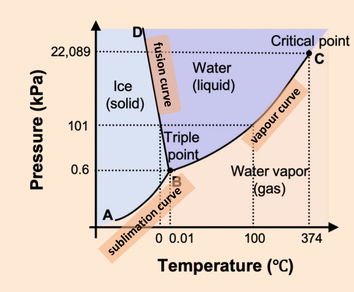
Another example:
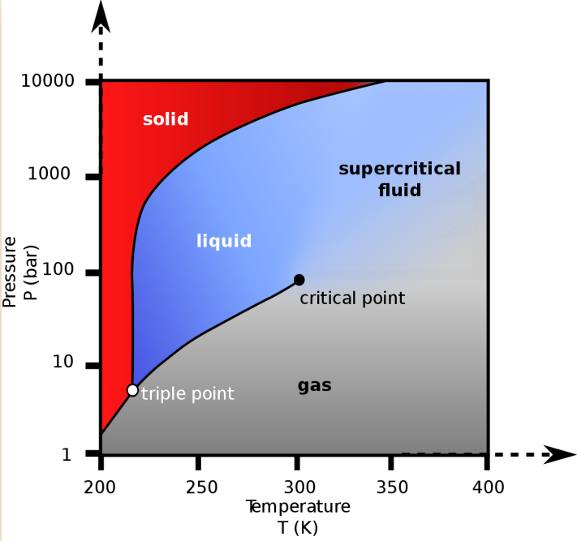
Generalised, with special features:
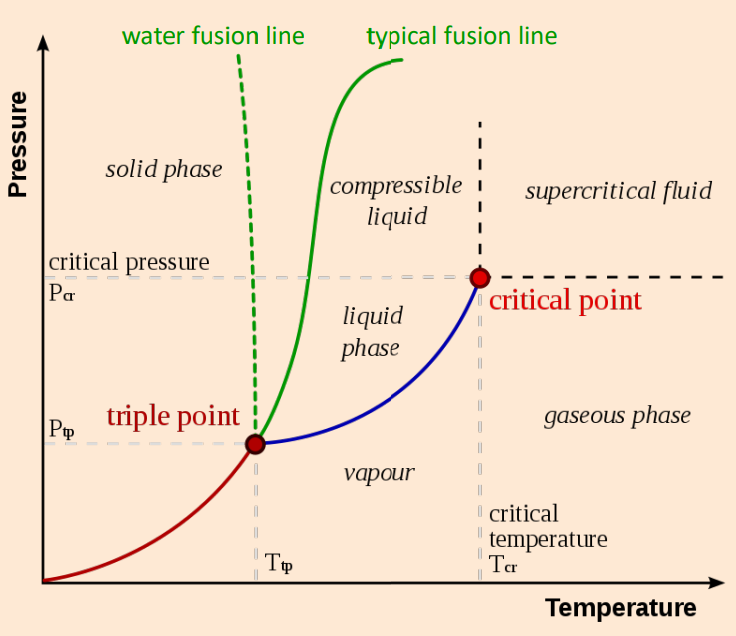
Changing the conditions can change the state in a phase transition. Along the phase boundaries, two phases are in equilibrium. At the triple point all three phases coexist. At a critical point, two phases becomes indistinguishable.
At the phase transition, at fixed pressure \(p\), per unit mass of the substance,
( this energy change is at constant pressure, and we will later call it enthalpy) The tangent to the curve between states, called the coexistence curve* has slope \[\frac{dp}{dT}=\frac{L}{T\Delta v}=\frac{\Delta s}{\Delta v}\]
On the evaporation curve, a useful approximation is to set: \[\Delta v\approx v_{gas}\approx \frac{nRT}{pm}\] amounting to the gas having a much larger volume than the liquid, and treating it as ideal. This gives \[\frac{dp}{dT}=\frac{pL}{T^2\left(\frac{R}{M}\right)}\] where \(M\) is the molar mass.
A state of matter can have one or more phases, depending on the conditions.
The state of a system is described by \(r+1\) intensive variables, where \(r\) is the number of significant work interactions. For example, a simple compressible matter, \(r=1\). Some extensive variables:
...And some intensive variables
Using these variables, you can create an equation of state. For example, for an ideal gas: \(pV=Nk_BT\)
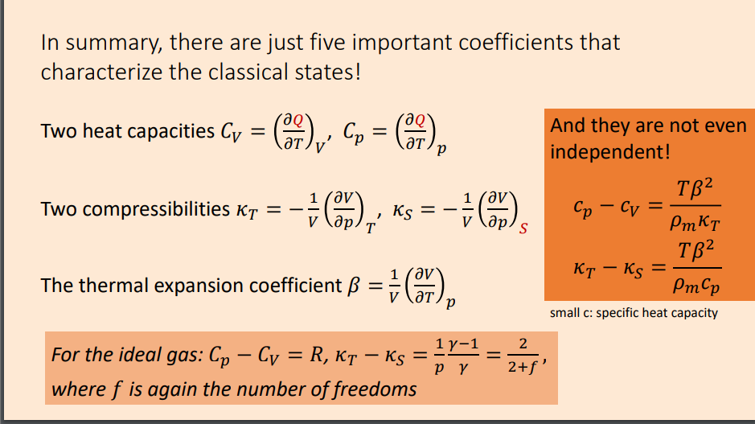
A better ideal gas equation, that accounts for the size of the molecules, and the attractive forces between them. \[\left(p+\frac{an^2}{V^2}\right)(V-nb)=nRT\]
When \(a=b=0\), the gas is ideal, and the normal ideal gas equation pops out.
\(p(V)\) at a constant \(T\).
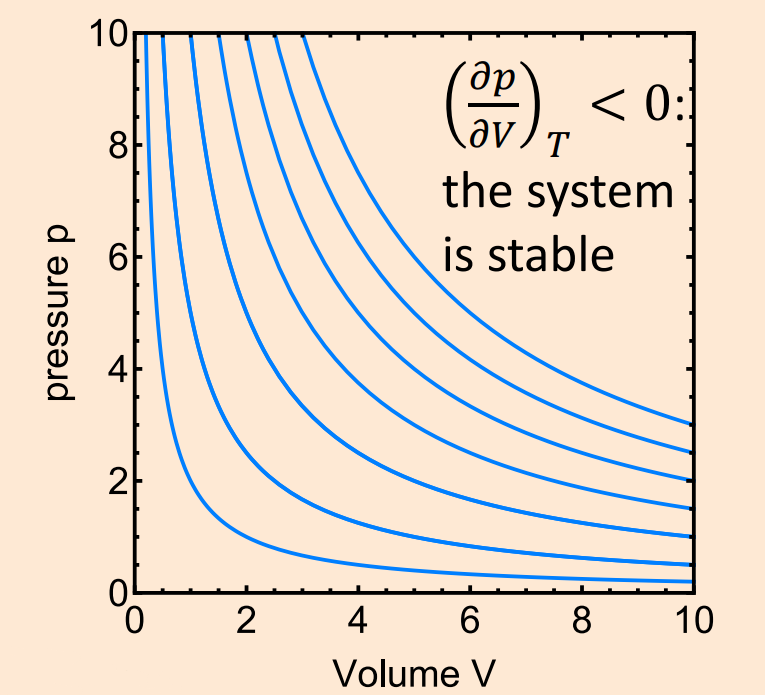
...more formally: \[\left(\frac{\partial p}{\partial V}\right)_T\lt 0:\textrm{ The system is stable}\] or
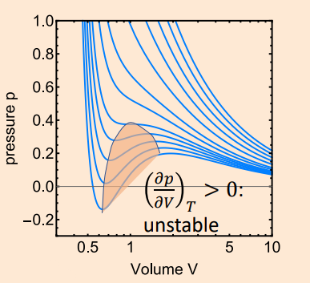
\[\left(\frac{\partial p}{\partial V}\right)_T\gt 0:\textrm{ The system is unstable}\]
Over a small step, \((dW)\): \[dW=Fdx=pAdx=pdV\] If we reverse the process, \(W=-W\). Furthermore, for a cyclic process, \[W=\oint pdV\] ...which is the enclosed area.
For \(n\) moles of ideal gas with \(f\) degrees of freedom: \(U=nC_VT\), with \(C_V=fR/2\) Basically, for a gas in a 3D volume: \[U=\frac{3}{2}nRT\]
In any thermodynamic process, the total energy (of a system + surroundings) is conserved
For a closed system: \[\Delta U=Q-W\] ...where \(\Delta U\) is the change of internal energy, \(Q\) is the heat transferred into the system, and \(W\) is the work done by the system. Heat and work are process properties. This means they are not a function of the initial and final state, but on the path between them. Internal energy is a state property. It is changed by the process in a way that can be inferred from the initial and final state.
... An idealised process, keeping the system in thermal equilibrium. System can be described by its equilibrium properties, even though these now depend on time. It requires the process to be sufficiently slow. Examples:
In terms of state variables:
\[Q=-W=nRT\ln\frac{V_2}{V_1}\] ...you may use the second law of thermodynamics (\(T\;dS=\delta Q\)) to work out the change in entropy.
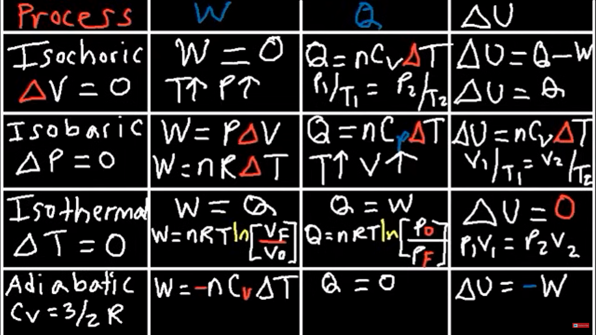
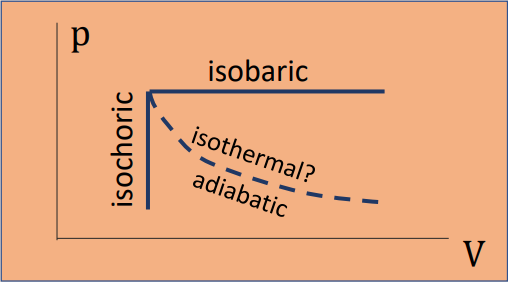
\[pV^\gamma=\textrm{const}\] with adiabatic exponent \(\gamma=C_p/C_v=1+2/f\)
Three main kinds of processes: changes in a system, cycles in a system flows through a system first law of flow processes: internal energy in the control volume \(dU=dU_{in}+\delta Q-dU_{out}-\delta W_{tot}\) But: enthalpy \(H=U+pV\) \[\implies dU=dH_{in}+\delta Q-dH_{out}-\delta W_{external}\]
System returns to its initial state. This means that all state variables, including \(U\), return to their initial value: \[\Delta U=0\implies W=Q\]
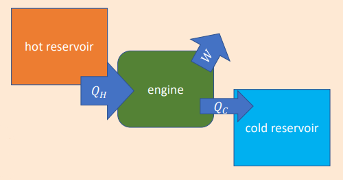
First Law: \(W=Q_H-Q_C\) With efficiency \[\eta=\frac{W}{Q_H}\]
...A specific type of engine that is theoretically the most efficient engine.. \[\eta=1-\frac{T_C}{T_H}\] A reversed heat engine is also a refrigerator, with performance \(K=\frac{|Q_C|}{|W|}\). The Carnot cycle is reversible, in which its performance is \(K=\frac{T_C}{T_H-T_C}\).
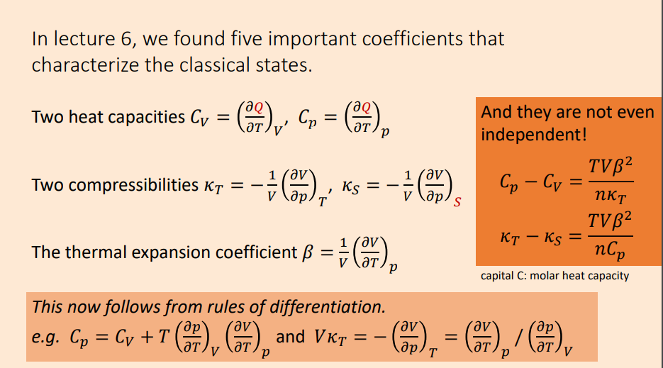
If a process is reversible: \[Q=\int^{S_2}_{S_1}T\;ds\qquad\]
In a reversible process: \[S=\int\frac{\delta Q}{T}\] Thus: \[\left(\frac{\partial U}{\partial S}\right)_V=T\]
For natural, spontaneous process, the total entropy of system and surroundings always increases:\[\Delta S\gt 0\]
In closed systems, natural processes with fixed extropy \(S\), and external parameters (volume, etc), proceed to reach an equilibrium state that minimises the internal energy \(U\).
\[S=k_B\ln\Omega\] where \(\Omega\) is the number of microstates (orientations) of a system.
Goal: make thermodynamics work for non-isolated systems The Gibbs entropy formula is particularly useful when dealing with systems where the microstates have different probabilities. This is common in systems in thermal equilibrium with varying energy levels and where not all microstates are equally likely. The Gibbs entropy is given by: \[S=-k_B\sum_iP_i\ln P_i\] where \(S\) is the entropy, \(k_B\) is the Boltzmann constant, \(P_i\) is the probability of the system being in the \(i\)-th microstate, and the sum is over all possible microstates.
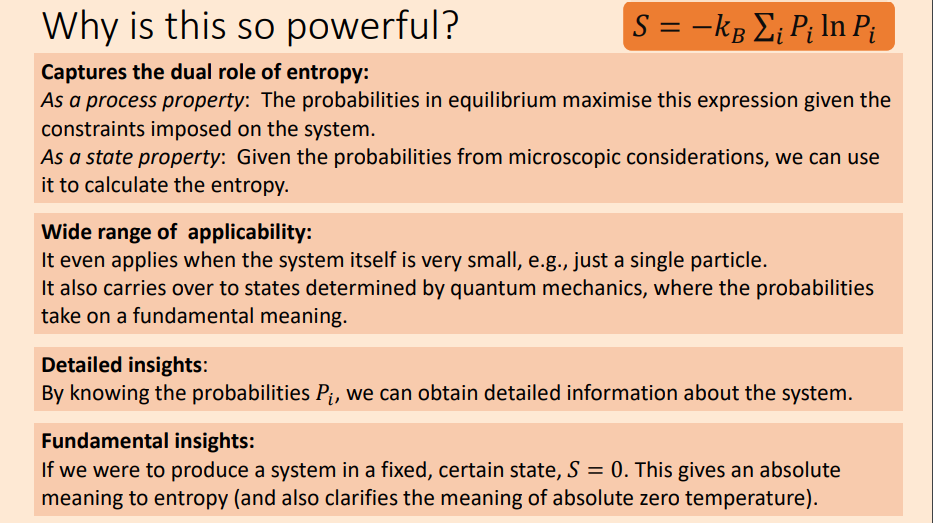
The Boltzmann entropy formula \(S=k_B\ln\Omega\) applies to isolated systems: The total energy \(U\), volume \(V\), and particle number \(N\) are fixed.
The most important case are systems coupled to a reservoir of fixed temperature. Thermodynamically, we describe this situation by the free energy \(F=U-TS\)Each microstate of energy \(E_i\) occurs with probability: \(p_i=\frac{1}{Z}e^{-\frac{E_i}{k_BT}}\)
The normalisation constant \(Z=\sum_ie^{-\frac{E_i}{k_BT}}\) is known as the partition function.